APÉNDICE SOBRE FISIOLOGÍA CELULAR
Uniones celulares y matriz extracelular, parte I-A: Uniones celulares
Los metazoos son organismos multicelulares, los cuales acechan organismos vivos para alimentarse. A causa de esto, los animales deben ser ágiles y fuertes, algo que solo se puede lograr si su arquitectura celular lo permite. Los tejidos que componen a los animales deben ser capaces de movimientos rápidos, y las células que forman estos tejidos deben poder generar y transmitir fuerzas, así como también cambiar de forma con velocidad.
Para entender cómo es que los metazoos logran deformar sus cuerpos de la manera que lo hacen y exhibir la fuerza y agilidad que los caracteriza, es necesario entender cómo los tejidos se organizan, y el primer paso para entender la arquitectura de los tejidos es estudiar las interacciones entre sus elementos celulares. Las interacciones de nuestro interés son las uniones que pueden ocurrir entre las células en un tejido, bien sea de forma directa o indirecta. Mientras que estas uniones directas implican un contacto entre los filamentos citoesqueléticos de las células enlazadas, las indirectas implican relaciones a través de un espacio conocido como la matriz extracelular. Este apéndice ofrece una introducción autosuficiente a las matrices extracelulares, las uniones célula-célula y las uniones célula-matriz para quienes no sean versados en el área.
El apéndice se divide en dos partes, la primera tratando las uniones célula-célula, mientras que la segunda consiste sobre matriz extracelular y uniones célula-matriz. Esta primera parte se subdivide en tres secciones. La primera es los fundamentos, la cual se basa en tres libros de textos autoritativos en biología celular para sentar las bases. La segunda concierne al desarrollo de estos conceptos. Por último, la tercera es de carácter más conceptual, filosófica y teórica, sirviendo como puente para discusiones futuras sobre evolución del tejido nervioso.
En la Figura 1 se esquematizan las formas en que las células se unen en los metazoos. Por una parte están los tejidos conectivos, como los huesos y tendones, compuestos de matriz extracelular (MEC), la cual a su vez es producida por células distribuidas escasamente dentro de esta. En este caso, el esfuerzo mecánico al que es sometido el tejido conectivo es soportado por la matriz en vez de las células. Las uniones célula-matriz son las que enlazan células de tejido conectivo a la matriz extracelular en la que yacen.
Figura 1. Uniones célula-célula y célula-matriz ilustradas a través de un esquema sobre los tejidos epiteliales y conectivos (Alberts et al., 2022, p. 1106). Las imágenes pueden verse afectadas si se usa el modo oscuro.
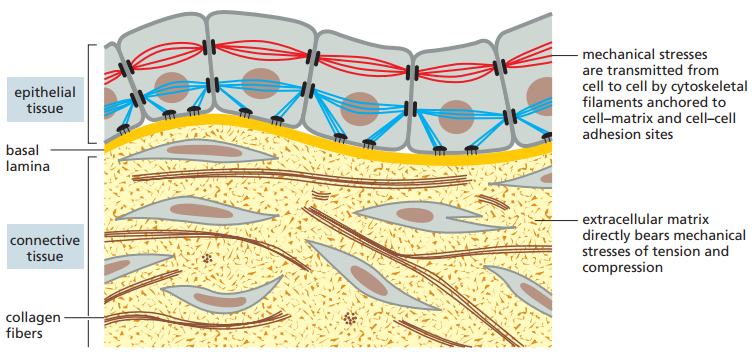Por otra parte, en los tejidos epiteliales las células están firmemente unidas entre sí en capas llamadas epitelios, los cuales pueden tener diferentes formas (Figura 2). La matriz extracelular es menos pronunciada y se compone de una capa delgada conocida como lámina basal, ubicada debajo del epitelio. En este caso, los enlaces entre las células ocurren por uniones célula-célula, las cuales implican anclajes de filamentos citoesqueléticos, transmitiendo el estrés mecánico a lo largo del interior de las células. Por último, el citoesqueleto de las células epiteliales también se enlaza a la lámina basal (la MEC de estos tejidos) por medio de uniones célula-matriz.
Figura 2. Tipos de epitelios según la organización y forma de las células (Alberts et al., 2014, p. 694).
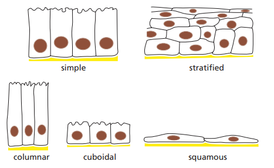La Figura 3 es una micrografía de barrido donde se observan las células epiteliales en relación a una lámina basal y el tejido conectivo subyacente, compuesto de fibrillas de colágeno.
Figura 3. Micrografía de barrido de una lámina basal, la cual apoya una capa de células epiteliales (Alberts et al., 2014, p. 695).
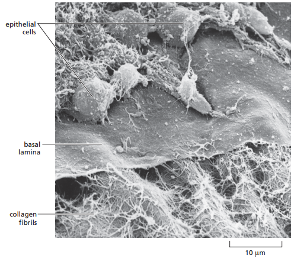Por otro lado, la Figura 4 es una micrografía de un corte transversal de hueso, donde se observan las relaciones entre las células y la matriz extracelular esquematizadas en la Figura 1. Las células son los pequeños puntos negros que se asemejan a una hormiga, y la materia grisácea y blancuzca en la que están incrustados a la MEC.
Figura 4. Micrografía de un corte transversal de un hueso (Alberts et al., 2014, p. 688).
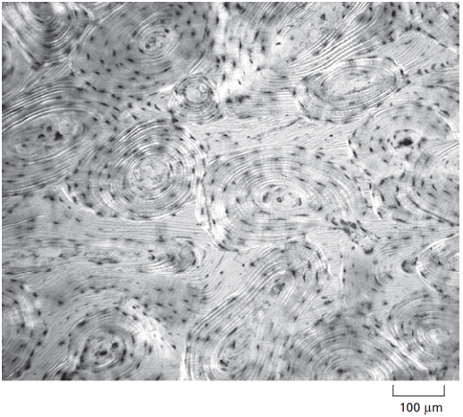Puesto que las células epiteliales contienen ambos tipos de uniones, podemos enfocarnos en ellas para estudiar los principales subtipos de uniones célula-célula y célula-matriz. La Figura 5 invita al lector a imaginarse el arreglo de uniones en un epitelio columnar, tal y como el revestimiento del intestino delgado. En esta se observan las uniones estrechas, adherentes, tipo hendidura, célula-matriz anclada a actina, de anclaje célula-célula, formadoras de canales y de anclaje célula-matriz, además de los desmosomas y hemidesmosomas. En el desarrollo de esta sección se desglosan todos estos conceptos.
Figura 5. Resumen de las diferentes uniones celulares en células epiteliales vertebradas (Alberts et al., 2022, p. 1106).
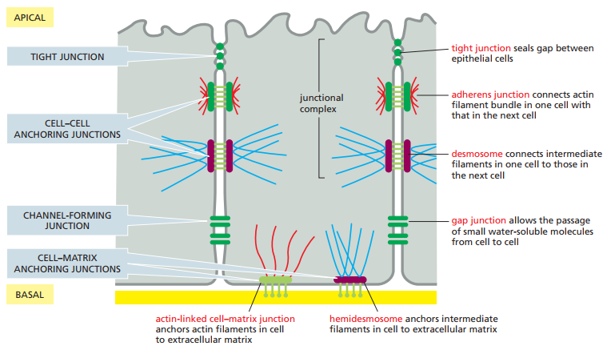En los lados de las células en el sistema de la Figura 5 se observan cuatro tipos de uniones célula-célula:
Los desmosomas y las uniones adherentes se consideran uniones de anclaje célula-célula, ya que anclan las células fuertemente entre sí, lo cual permite que el tejido soporte estrés mecánico. Estas, sin embargo, no son las únicas uniones de anclaje, ya que también existe el anclaje entre MEC y células a través de las siguientes uniones:
La unión célula-matriz anclada a actina es, de cierta forma, similar a las uniones adherentes debido al uso de actina, pero difieren en lo que conectan. Mientras que la primera conecta dos células, la segunda ancla una célula con la MEC a su alrededor. De manera similar, los desmosomas y hemidesmosomas se asemejan en el uso de filamentos intermedios, con la diferencia radicando en lo que se está anclando: dos células o una célula con su MEC respectivamente.
En resumen, las uniones de anclaje célula-célula incluyen los desmosomas y las uniones adherentes, mientras que las uniones de anclaje célula-matriz se constituyen de los hemidesmosomas y las uniones célula-matriz ancladas a actina. En conjunto forman las uniones de anclaje.
Aunada a las uniones de anclaje se encuentran las uniones estrechas, ya presentadas, y las uniones formadoras de canales, como las uniones tipo hendidura. Estas serán desarrolladas a mayor detalle a lo largo del apéndice.
Las uniones de anclaje dependen de proteínas de adhesión transmembrana, las cuales se consideran integrales en la medida que una terminación enlaza el citoesqueleto dentro de la célula mientras que la otra conecta a superficies fuera de esta (Figura 6). Esta clase de proteínas caen dentro de dos superfamilias de moléculas que corresponden a los dos tipos básicos de acoplamiento externo:
Dentro de cada superfamilia se puede conseguir especialización, como se ilustra en la Tabla 1 adaptada de Alberts et al. (2022, p. 1107).
Tabla 1. Uniones de anclaje (Alberts et al., 2022, p. 1107).
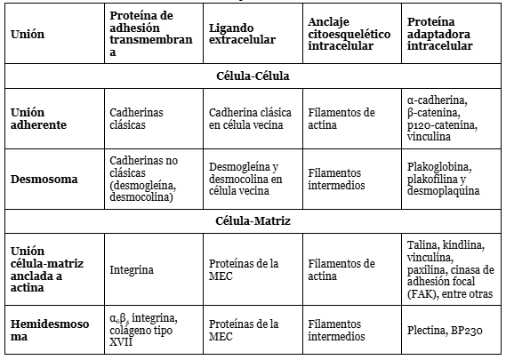Figura 6. Representación esquemática de cómo las proteínas de adhesión transmembrana conectan el exterior de una célula (sea una MEC u otra célula) con sus filamentos citoesqueléticos internos (Alberts et al., 2022, p. 1107).

Por supuesto, como todo fenómeno biológico, no todas las instancias de uniones célula-célula o célula-matriz exhiben esta regularidad. Algunas integrinas median uniones célula-célula en vez de enlaces célula-matriz. Asimismo, hay otros tipos de moléculas de adhesión de carácter más transitorio que permiten la unión de dos células en circunstancias particulares. A pesar de estas excepciones, las tendencias observadas son las ilustradas en la tabla.
La función principal de las uniones célula-célula es resistir las fuerzas mecánicas que tienden a separarlas. Al mismo tiempo, son dinámicas y adaptables, de modo que pueden reorganizarse cuando el tejido necesite repararse, remodelarse o deformarse bajo la acción de fuerzas externas. Sin la resistencia que proporcionan estas uniones, los epitelios se disgregarían en sus células constituyentes; pero sin la flexibilidad que conservan dentro de esa resistencia, los tejidos no podrían deformarse como lo hacen, y los organismos multicelulares no podrían mantenerse como cuerpos deformables, y una condición necesaria para el movimiento espontáneo es la deformabilidad del cuerpo.
Usualmente las uniones entre células son simétricas, lo cual quiere decir que si en una célula el enlace es a la actina, entonces en la otra célula también será a la actina. En el caso de las cadherinas, como es de esperarse con base en lo que hemos dicho, los enlaces son homofílicos, lo cual quiere decir que las moléculas de cadherina de un subtipo específico se enlazan a subtipos idénticos o similares de cadherina (Figura 7).
Figura 7. Representación esquemática de las uniones homofílicas y heterofílicas. Mientras que en las homofílicas se observan enlaces entre proteínas similares o idénticas, en las heterofílicas se observan enlaces entre proteínas diferentes (Alberts et al., 2022, p. 1109).
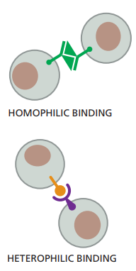La Figura 8 ilustra los subtipos principales de cadherina de manera esquematizada, donde se observa que la parte extracelular de la cadherina se compone de óvalos verdes. Cada óvalo verde en realidad representa una copia de una estructura llamada dominio extracelular de la cadherina. En la cadherina clásica se ubican 5 dominios EC, mientras que en la desmogleína y desmocolina puede haber de 4 a 5. Por otro lado, las cadherinas no-clásicas son mucho más diversas, exhibiendo hasta más de 30 dominios EC.
Figura 8. Subtipos de la superfamilia cadherina (Alberts et al., 2022, p. 1109).
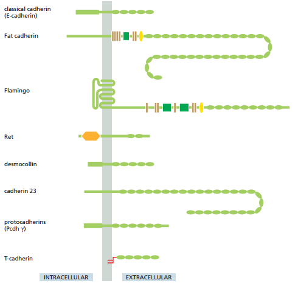La unión homofílica entre dos cadherinas ocurre en sus extremos N terminales, o los extremos más alejados de la membrana. Cada uno de estos dominios terminales forman un nudo y cavidad adyacente. Las moléculas de cadherina que sobresalen de las membranas se unen mediante la inserción del nudo de un dominio en la cavidad del otro (Figura 9).
Figura 9. Región extracelular de dos cadherinas clásicas enlazándose por medio de la inserción del nudo de una en la cavidad adyacente de la otra. Se observan las bisagras flexibles mantenidas en un estado rígido por la presencia de iones de calcio, así como también una representación esquematizada del enlace homofílico entre ambas cadherinas (Alberts et al., 2022, p. 1110).
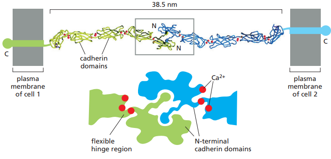Por otro lado, cada dominio EC forma una unidad más o menos rígida unida al siguiente dominio por medio de una bisagra. Los iones de Ca2+ se enlazan a sitios cercanos a cada bisagra y previenen la flexión de estos, de tal forma que las cadenas de dominios EC se comporten como bastones rígidos y sutilmente curvados.
La reducción de la concentración de Ca2+ extracelular, los enlaces de Ca2+ entre los dominios de EC en un tejido epitelial se reducen, lo cual lleva a mayor flexibilidad en las bisagras de las cadherinas y, por ende, en moléculas que no están orientadas de la manera apropiada para interactuar con la cadherina de otra célula (Figura 10).
Figura 10. Efectos de la reducción en la concentración extracelular de Ca2+ sobre los dominios EC de las cadherinas (Alberts et al., 2022, p. 1110).
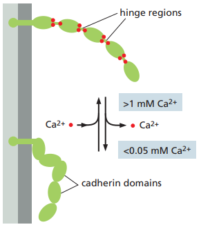La especificidad de las uniones homofílicas entre cadherinas es la razón por la cual existen tantos tipos diferentes de cadherina. Estas guían la organización de tejidos en desarrollo, pero como el énfasis de este apéndice no es en embriología, no se ahondará en esto. Se recomienda Alberts et al. (2022) para revisar el papel que juega la cadherina en el desarrollo embrionario y la organización de los tejidos.
Ahora bien, en sus formas maduras, las uniones adherentes forman complejos proteicos que contienen desde los cientos hasta los miles de moléculas de cadherina empacadas en arreglos regulares y densos enlazados en el lado extracelular por interacciones entre dominios de cadherina (Figura 11). Para poder lograr estos enlaces no solo es necesario producir más cadherina, sino también alterar el citoesqueleto de actina subyacente. Asimismo, para alcanzar una adhesión fuerte, es necesario reducir la tensión cortical.
Figura 11. Enlaces entre diferentes cadherinas en la unión de dos células (Alberts et al., 2022, p. 1110).
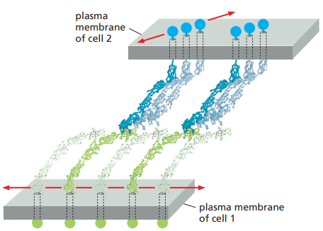La tensión cortical es similar a la tensión de la superficie que gotas de agua exhiben, la cual hace que tomen una forma esférica. De manera afin, las células asumen una forma esférica al no estar unidas a nada y en suspensión. Esta tensión cortical es ejercida por la actividad contráctil generada por haces de actina y miosina-II en la corteza celular. La tensión cortical es tan fuerte que, incluso cuando dos células interactúan a través de una sola unión de cadherina, las superficies se mantienen esféricas. Por ello, para facilitar las uniones célula-célula, la formación de actina y miosina-II en la corteza celular debe ser inhibida, como se ilustra en la Figura 12.
Figura 12. Interacciones entre dos precursores de células epiteliales a medida que aumentan las uniones célula-célua. Se observa la desintegración de la corteza celular alrededor de las uniones para facilitarlas (Alberts et al., 2022, p. 1112).
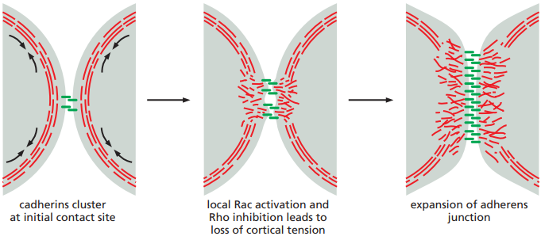La inhibición de la formación de corteza celular alrededor de las uniones célula-célula ocurre por la alteración de dos GTPasas llamadas Rac y Rho. Estas señales gobiernan la conducta de los filamentos de actina locales. Mientras que Rho promueve esta formación, Rac la inhibe. Por ello, Rac debe ser activado mientras que Rho es inhibido para evitar la formación de corteza celular y que, en cambio, la actina y miosina se ramifique, permitiendo la modificación de la superficie de la célula (aplanándose en la región de las uniones, como en la Figura 12 a la derecha) y la formación de nuevas uniones célula-célula.
Una vez una gran cantidad de moléculas de cadherina están alineadas en un complejo de uniones célula-célula como el de la Figura 12, Rho es activado y Rac inhibido para promover la formación de haces lineales y contráctiles de actina que conecten la cadherina con el citoesqueleto de actina.
En materia de la relación entre el citoesqueleto y la cadherina, ambas son enlazadas por una proteína llamada catenina (Figura 13). Estas son proteínas adaptadoras que se ensamblan en la cola de la cadherina, a decir, en sus dominios intracelulares. En el caso de los desmosomas, cuyas colas conectan con filamentos intermedios, otras proteínas adaptadoras son reclutadas como la plakoglobina (regresar a la Tabla 1 para la lista de las proteínas adaptadoras principales tanto en desmosomas y uniones adherentes).
Figura 13. Representación esquemática de la relación entre la cadherina y el citoesqueleto, la cual es mediada por la catenina (Alberts et al., 2022, p. 113).
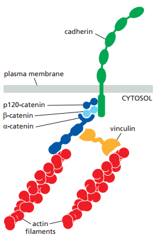Los complejos proteicos que permiten las uniones célula-célula, como la catenina, pueden sentir el estrés mecánico y generar señales bioquímicas para facilitar respuestas apropiadas, fenómeno que se conoce como mecanotransducción.
En estudios de pares de células mamíferas cultivadas y conectadas por uniones adherentes se ha observado que el incremento experimental de la actividad contráctil en una lleva a un incremento de tamaño en las uniones adherentes, y la actividad contráctil de la segunda célula se altera hasta igualar la de la primera, lo cual resulta en un balance de fuerzas en ambos lados. Esta clase de estudios y otros han llevado a afirmar que las uniones adherentes pueden sentir y mediar la contractilidad de las células que enlazan para balancear las fuerzas y evitar que las células se separen o que unas jalen otras.
La Figura 14 ilustra el mecanismo por el cual la actividad de las uniones adherentes es modificada por la contracción de la miosina II. Cuando la miosina II hala los filamentos de actina a los que se conecta la α-catenina (Figura 13), la α-catenina plegada se extiende, abriendo paso a un sitio activo donde la vinculina puede enlazarse para unir la cadherina a otro filamento de actina (Figura 14).
Figura 14. Mecanismo de cambio en la actividad de la cadherina en función de la tensión (Alberts et al., 2022, p. 1114).
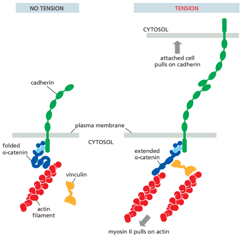Puesto que todas las células en un epitelio están conectadas a través de uniones adherentes y desmosomas, la mecanotransducción opera a largas distancias.
Los desmosomas son estructuralmente similares a las uniones adherentes. Empero, como se explicó en la Tabla 1, estos anclan al filamento intermedio en vez de la actina. La función principal de los desmosomas es proveer fuerza mecánica. Se presentan en mayor cantidad en tejidos sujetos a altos niveles de estrés mecánico, como el epitelio que conforma la capa externa de la piel y el miocardio. La Figura 15 esquematiza los desmosomas, mientras que en la Figura 16 se grafican las proteínas que los componen.
Figura 15. Estructura de un desmosoma (Alberts et al., 2022, p. 1117).
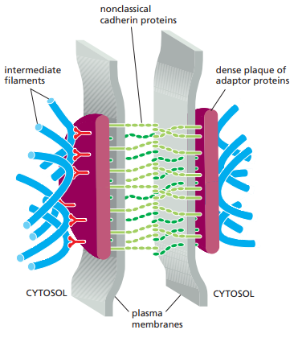Figura 16. Proteínas que componen los desmosomas (Alberts et al., 2022, p. 1117).
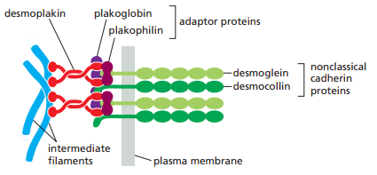Los desmosomas se unen a los filamentos intermedio a través de proteínas adaptadoras llamadas desmoplakina, plakogoblina y plakofilina, las cuales forman una densa placa proteica (Figura 15).
En la Figura 17 se ubican dos micrografías electrónicas, donde se observa a la izquierda tres células de la piel de un ratón bebé, donde los desmosomas aparecen como ‘botones’ de una camisa en el espacio entre las células. A la derecha en la Figura 17, por otro lado, se observa un desmosoma en mayor magnificación como un espacio oscurecido en el espacio intercelular. Las regiones más oscuras alrededor del desmosoma en el interior de las células corresponden a las placas de proteínas adaptadoras.
Figura 17. Micrografía de electrón de tres células de la piel de un ratón bebé a la izquierda y magnificación de un desmosoma entre estas células a la derecha (Alberts et al., 2022, p. 1117).

Más allá de las uniones adherentes y los desmosomas, que anclan células vecinas para formar tejidos epiteliales, se encuentran otras clases de uniones que cumplen funciones distintas pero igualmente relevantes para la organización de los tejidos. Entre ellas se encuentran las uniones estrechas y las uniones tipo hendiduras. Ambas uniones son diferentes entre sí no solo en su composición bioquímica, sino también en la función particular que cumplen. Las siguientes dos subsecciones serán dedicadas a estas.
Todos los epitelios están estructuralmente polarizados, en el sentido de que sus extremos difieren en su estructura y composición. Mientras que por un lado los epitelios se separan de otros tejidos por medio de sus anclajes a una lámina basal (el lado basal), del otro extremo están libres de estos anclajes, en cambio bañados en fluido extracelular (el lado apical).
De manera similar a las membranas celulares, estos tejidos exhiben permeabilidad selectiva. Separan los fluidos que permean los tejidos en el lado basal del fluido con una composición química distinta en su lado apical. Para ello, las células deben estar selladas, función que cumplen las uniones estrechas, de tal forma que moléculas no se puedan filtrar libremente por la capa celular.
El intestino delgado ilustra con claridad el papel de las uniones estrechas para evitar que el fluido extracelular de un tejido se mezcle con el de otro. La Figura 18 es una esquematización del epitelio del intestino delgado en relación a su lámina basal, la cual la separa de los vasos sanguíneos. En el lado apical del epitelio del intestino delgado se observa el lumen (la cavidad interna del intestino). Los enterocitos, o células absortivas, deben transportar nutrientes específicos a lo largo del epitelio desde el lumen hacia el fluido extracelular en el otro lado, desde donde se difunden en los vasos sanguíneos para proveer nutrientes al organismo.
Figura 18. Esquematización del flujo de nutrientes desde el fluido extracelular apical hasta los vasos sanguíneos a través de los enterocitos del intestino delgado (Alberts et al., 2022, p. 1118).
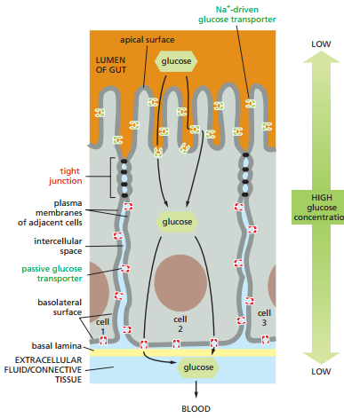Este movimiento de nutrientes desde el lumen del intestino delgado, cruzando por los enterocitos y culminando en los vasos sanguíneos se conoce como transporte transcelular. Este movimiento depende de dos tipos de proteínas de transporte en los enterocitos. Mientras que un tipo se ubica en el lado apical, el otro se encuentra en el lado basolateral (tanto basal como lateral). Estas permiten que las mismas moléculas se desplacen por medio de transporte pasivo hasta el fluido extracelular al otro lado del epitelio. Este método solo es efectivo si los espacios intercelulares entre las células epiteliales están estrechamente sellados, de tal forma que los nutrientes que han sido transportados hacia la región basolateral no puedan filtrarse de nuevo hacia el lado apical.
En la figura 19 se esquematiza la manera en que las uniones estrechas evitan el flujo de moléculas de un lado de la capa epitelial a otro. En experimentos con trazadores de baja masa molecular que son añadidos a un lado de una capa epitelial, se puede observar que generalmente no cruzarán las uniones estrechas hacia el otro lado. Sin embargo, las uniones estrechas no son absolutamente impermeables, y dependiendo del tejido y las diferencias proteicas pueden exhibir diferentes grados de selectividad. Por ejemplo, las uniones estrechas en los epitelios del intestino delgado son 10,000 veces más permeables a iones inorgánicos que las uniones estrechas en los epitelios de la vejiga urinaria. El movimiento de moléculas a través de uniones estrechas se conoce como transporte paracelular.
Figura 19. A la izquierda, los trazadores de baja masa molecular no pueden pasar de un lado de las uniones estrecha a otros. A la derecha, micrografías electrónicas donde las moléculas han sido añadidas al lado apical o basal y se observa cómo no cruzan más allá de la unión estrecha (apical a la izquierda y basal a la derecha) (Alberts et al., 2022, p. 1119).
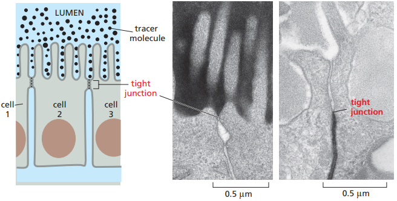La microscopía electrónica permite observar que, en la ubicación de dos membranas plasmáticas interactuando por uniones estrechas, estas exhiben contigüidad, como el caso de la Figura 19 a la derecha y la Figura 20.
Figura 20. Micrografía electrónica convencional de uniones estrechas que se observan como conexiones focales entre la hoja externa de la bicapa fosfolipídica. Cada conexión corresponde a una hebra de sellado transversal (Alberts et al., 2022, p. 1120).
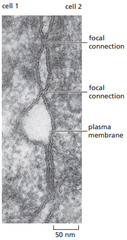Por otro lado, la microscopía de fractura por congelación brinda mucho mayor detalle sobre las uniones estrechas a nivel estructural. Se observa que debajo de los microvellos de células epiteliales en sus zonas apicales se forma un cinturón de hebras de sellado cuya función es conectar estrechamente la célula con las otras unidades del epitelio a su alrededor, y que los espacios intercelulares son interrumpidos por las crestas de partículas transmembrana que forman hebras de sellado (Figura 21). No obstante, para entender que esta es la micrografía de un enterocito en el intestino delgado, es importante saber que sus tejidos tienen una estructura particular ilustrada en la Figura 22.
Figura 21. Micrografía de fractura por congelación de una unión estrecha (Alberts et al., 2022, p. 1120).

Figura 22. Organización de las células funcionalmente polarizadas en el intestino delgado. Se observa la esquematización de los microvellos que aparecen en la micrografía electrónica con fractura por congelación de la Figura 21 (Alberts et al., 2014, p. 696). Los microvellos sirven para incrementar el área de la membrana plasmática para el transporte de moléculas pequeñas dentro de la célula.
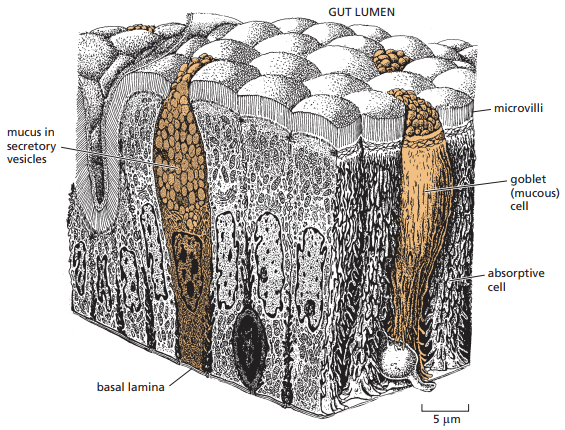Las claudinas son los componentes proteicos principales de las uniones estrechas (Figura 23 y 24). Los ratones que carecen del gen claudina-I fallan en formar uniones estrechas entre células en la capa epidérmica de su piel, por lo cual el agua en sus organismos se evapora a través de la piel y mueren un día después del nacimiento. Además de la claudina, la ocludina es otra proteína que juega un papel relevante en las uniones estrechas, la cual consiste en limitar la permeabilidad funcional. Por último, la tricelulina es necesaria para sellar membranas celulares en conjunto y prevenir filtración transepiteliales en los puntos que tres células se encuentran.
Figura 23. Esquematización de las uniones estrechas entre dos células epiteliales. Se observan los espacios intercelulares aislados unos de otros a través de conexiones focales entre hebras de sellado de claudina y ocludina (Alberts et al., 2022, p. 1120).
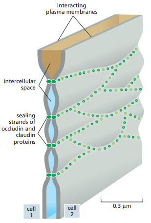Figura 24. Composición molecular de una hebra de sellado (Alberts et al., 2022, p. 1120).
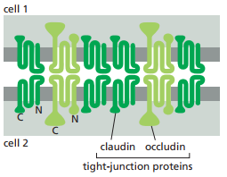Se sugiere que la claudina sirve como poros paracelulares con permeabilidad selectiva, y existen al menos 24 especies de claudina en los humanos. Una claudina específica, por ejemplo, es necesaria para permitir el paso de Mg2+ entre las células de los túbulos renales para que sea reabsorbido de la orina a la sangre. La mutación del gen que codifica esta claudina puede llevar a pérdida excesiva de este ión inorgánico a través de la orina.
Por otro lado, las proteínas de zonula occludens (ZO) son responsables de la organización de las otras proteínas en las uniones estrechas. Existen tres miembros principales en esta familia: ZO-1, ZO-2 y ZO-3. Las ZO consisten de dominios de unión a proteínas, es decir, regiones estructurales de una proteína que les permiten interactuar (o unirse) con otras proteínas. Normalmente son dominios PDZ, los cuales pueden reconocer y unirse a los terminales C de proteínas específicas. Mientras que un dominio puede unirse a claudina, los otros pueden unirse a ocludina o la actina del citoesqueleto (Figura 25).
Figura 25. Representación esquemática de ZO-1, ZO-2 Y ZO-3. Cada uno se comprende de cadenas de PDZ que pueden enlazarse a claudina, ocludina o actina (Alberts et al., 2022, p. 1121).

Estas redes de uniones estrechas normalmente yacen apicales a los desmosomas y uniones adherentes que enlazan a las células mecánicamente. El ensamble total es lo que se conoce como un complejo de unión (Figura 1).
Las uniones tipo hendidura forman canales directos entre el citoplasma de dos células distintas, esencialmente sirviendo como puente eléctrico y metabólico entre ambas. En las micrografías electrónicas convencionales, las uniones tipo hendidura se ven como un parche donde las membranas de dos células están separadas por una hendidura uniforme de 2-4 nm. Estas brechas están cubiertas de proteínas formadoras de canales que se separan en dos: conexinas e inexinas. El primer tipo es predominante en vertebrados, mientras que el segundo se ubica en las uniones tipo hendidura de los invertebrados.
El tamaño de los poros en las uniones tipo hendidura es de 1.4 nm, lo cual permite el intercambio de iones inorgánicos y otras moléculas solubles en agua, pero no macromoléculas como proteínas o ácidos nucleicos. En experimentos donde moléculas fluorescentes son inyectadas a una célula unida a otra a través de uniones tipo hendidura, moléculas de hasta 1000 daltones en masa pueden cruzar de una célula a otra a través de estas uniones, mientras que aquellas mayores a 1000 daltones no pueden cruzar (Figura 26).
Figura 26. Esquematización de las moléculas que pueden cruzar las uniones tipo hendidura en función de su masa en daltones (Alberts et al., 2022, p. 1122).
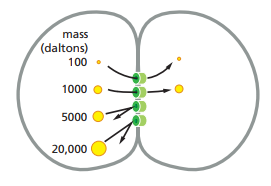La contracción de los músculos lisos y de los miocardios es mediada por las uniones tipo hendidura, ya que la excitación eléctrica de una célula dentro de sus epitelios permite la transferencia de la corriente a través del flujo de iones inorgánicos por las uniones tipo hendidura. Es una forma de comunicación eléctrica que evita los retrasos en las sinapsis químicas.
De manera general, la capacidad para compartir metabolitos e iones confiere un mecanismo para coordinar la actividad de células individuales, por lo cual el estudio de las uniones tipo hendidura resulta relevante para entender la comunicación intercelular y la coordinación de los organismos. Contrario a lo que se cree, existe comunicación neuronal por medio de uniones tipo hendidura, por lo que un entendimiento de estas uniones tiene repercusiones en nuestros intereses alrededor del sistema nervioso.
Ahora bien, las uniones tipo hendidura se componen de conexones, los cuales son hemicanales compuestos de seis conexinas (Figura 27). Se le llaman hemicanales ya que necesitan del conexón en la célula adyacente para formar un canal completo. El momento en que el conexón de una célula se une con el de otro, se crea un canal acuoso continuo que conecta el interior de ambas células. Cada unión tipo hendidura se forma de numerosos conexones.
Figura 27. (A) Esquematización de una unión tipo hendidura donde los conexones de dos membranas plasmáticas en interacción se alinean. (B) Esquematización de los diferentes tipos de conexones: homoméricos (compuestos del mismo tipo de conexina), heteroméricos (compuestos de diferentes tipos de conexina), homotípicos (en ambos lados compuestos del mismo tipo de conexina) y heterotípicos (en ambos lados compuestos de diferentes tipos de conexina) (C) Estructura de una unión tipo hendidura homomérica (Alberts et al., 2022, p. 1122).
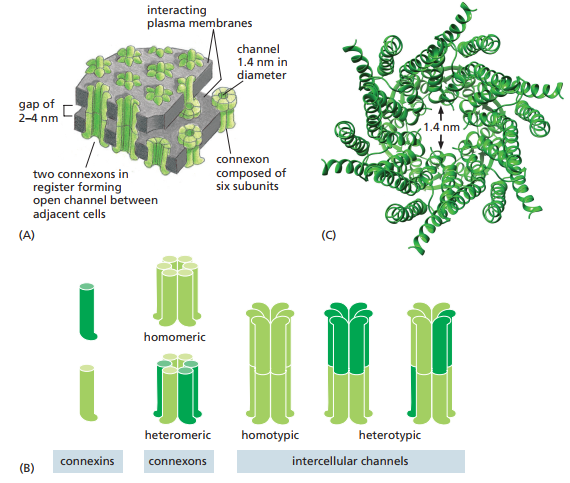Dependiendo del tejido, los tipos de conexinas empleados pueden variar, lo cual lleva a canales que varían en permeabilidad y regulación (Figura 27). Estos, además, pueden variar entre estados abiertos y cerrados como los canales de iones. Estos cambios son desencadenados por estímulos como cambios en las diferencias de voltaje entre dos células unidas, el potencial de membrana de cada célula, y las propiedades bioquímicas del citoplasma, tal y como el pH y la concentración de Ca2+ libre.
Alberts, B., Bray, D., Hopkin, K., Johnson, A., Lewis, J., Raff, M., Roberts, K., & Walter, P. (2014). Essential cell biology (4th ed.). Garland Science
Alberts, B., Heald, R., Johnson, A., Morgan, D., Raff, M., Roberts, K., & Walter, P. (2022). Molecular biology of the cell (7th ed.). WW Norton.
Freddy J. Molero-Ramírez
fmolero@mail.uniatlantico.edu.co